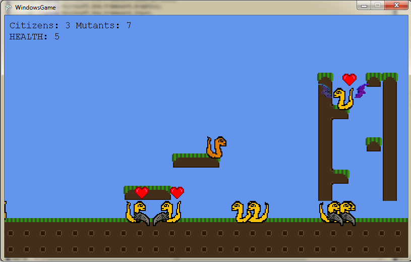

Ludumdare
Ludumdare
Ludumdare is a game jam that I participated in during the summer during my co-op semester at RIM. I teamted up with another student and we created a somewhat working game over the course of a weekend.
The game was centered around the theme of "creation". The basic mechanics of the game is to increase your citizen population while preventing mutations from taking over your citizens. The game begins with
citizens roaming the map. As time goes on a citizen randomly enters a mating state and if they come in contact with another citizen an offspring is produced. Random mutations also occur during the life cycle
of the game, they include wings which allow the mutants to fly, claws that cause damage, fire breathing causing fireballs to spew forth, etc. The trouble occurs when mutants mate with citizens. The mutants
attributes come off in the offspring since they have dominant genes. Here's a screen shot of the game:

The source is also available on bitbucket